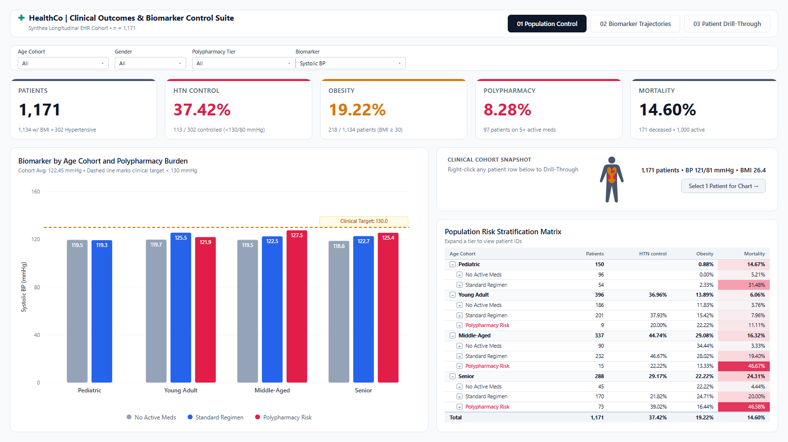
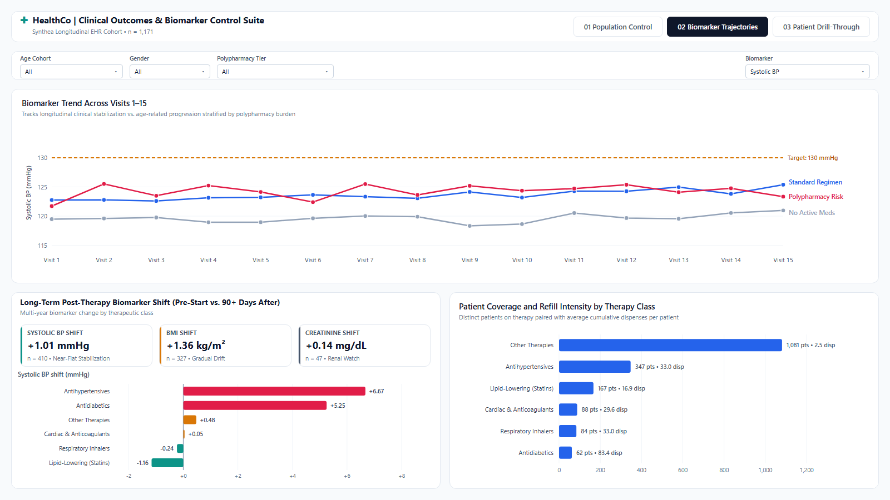
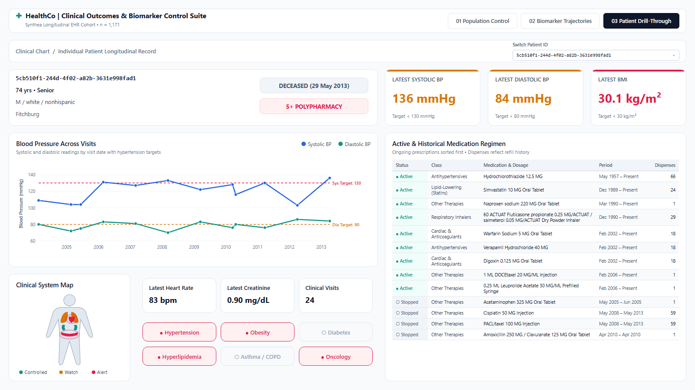
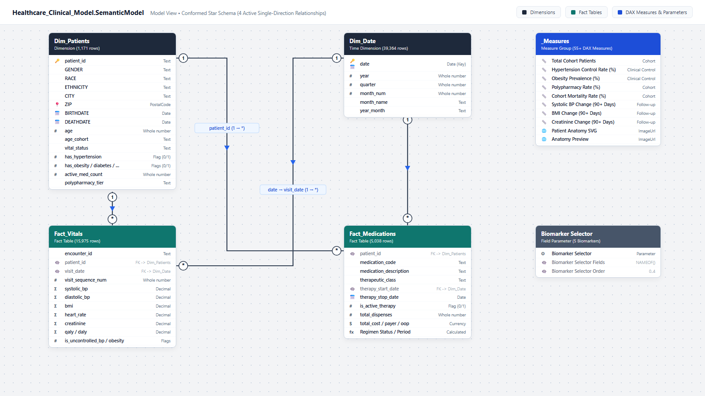

An end-to-end clinical intelligence project built over a 1,171-patient Massachusetts Synthea cohort—featuring a conformed Star Schema, deterministic TOPN tie-breaking DAX, dynamic Field Parameters, and a native Dynamic DAX SVG Human Anatomy Map.
With 1,171 patients, 15,975 vital records (including 1,056 undated QALY rows), and 5,038 medication therapies, naive aggregations broke down across same-day visits and multi-year follow-ups.
Undated records and same-day encounter ties skewed cohort baselines. Deterministic TOPN tie-breaking isolates each patient's true latest dated systolic, diastolic, and BMI reading.
Comparing pre-therapy averages against readings ≥90 days after initiation reveals near-flat BP drift (+1.01 mmHg over 4.98 yrs) versus gradual BMI (+1.36 kg/m²) and creatinine (+0.14 mg/dL) drift.
By pairing a Risk Stratification Matrix with a pure-DAX SVG Human Anatomy Map, care teams immediately spot multi-organ alerts (Heart, Lungs, Kidneys, Metabolic) alongside active refill history.
Across 302 flagged hypertensive patients with complete blood pressure pairs, 189 (62.58%) remain uncontrolled—while polypharmacy burden concentrates sharply in older adults with 46.6% mortality.
Paired within-patient follow-up evaluates readings before first qualifying therapy against all readings from day 90 onward—observing multi-year trajectories without an untreated control arm.
| 90+ Day Paired Follow-Up | Mean Shift | Paired n | Median Gap |
|---|---|---|---|
| Systolic BP Change | +1.01 mmHg | 410 | 4.98 yrs |
| BMI Change | +1.36 kg/m² | 327 | 5.08 yrs |
| Creatinine Change | +0.14 mg/dL | 47 | — |
Clinicians drill directly from any Age × Polypharmacy Risk tier into an individual patient's longitudinal BP timeline, 13+ medication history, and real-time DAX SVG system map.
5cb510f1...fad1 · Age 74 · 13 Meds)dataCategory: ImageUrl inside a standard Power BI table—zero custom visual marketplace dependencies.1600×900 executive canvas with custom ClinicalExecutiveTheme, dynamic Field Parameters, cross-page Drill-Through, and conformed Star Schema.




Dim_Patients & Dim_Date filtering Fact_Vitals & Fact_Medications), _Measures, and Biomarker Selector4 Synthea CSV tables embedded & toggleable via CSVFolder parameter.
4-table Star Schema with 4 active single-direction 1→* relationships.
TOPN tie-breaking latest vitals & paired 90+ day pre/post deltas.
Biomarker Selector switches axes, targets, & subtitles across 5 vitals.
Inline DAX SVG anatomy map & 3-page PBIR report definitions.
Prioritize the 189 hypertensive patients above 130/80 mmHg—starting with Seniors (29.17% control) and Polypharmacy Risk tiers.
Target the 88 Middle-Aged and Senior patients on 5+ active drugs via pharmacist deprescribing and adherence reviews.
Pair pharmacotherapy initiation with structured lifestyle coaching to counter the +1.36 kg/m² 5-year BMI drift and 29.08% Middle-Aged obesity.
Schedule routine eGFR and serum creatinine labs for patients initiating chronic therapies showing +0.14 mg/dL drift.
Enforce encounter date stamps on quality-of-life surveys so all 1,056 undated vitals/QALY records integrate into dated time-series trends.
Clone the repository, open Healthcare_Clinical_Model.pbip in Power BI Desktop, and click Refresh—embedded CSVs work immediately out of the box.